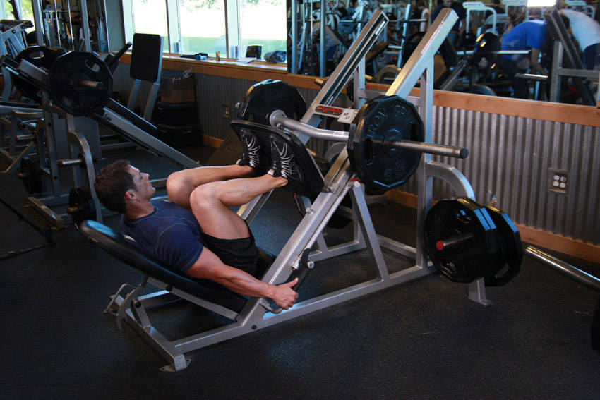
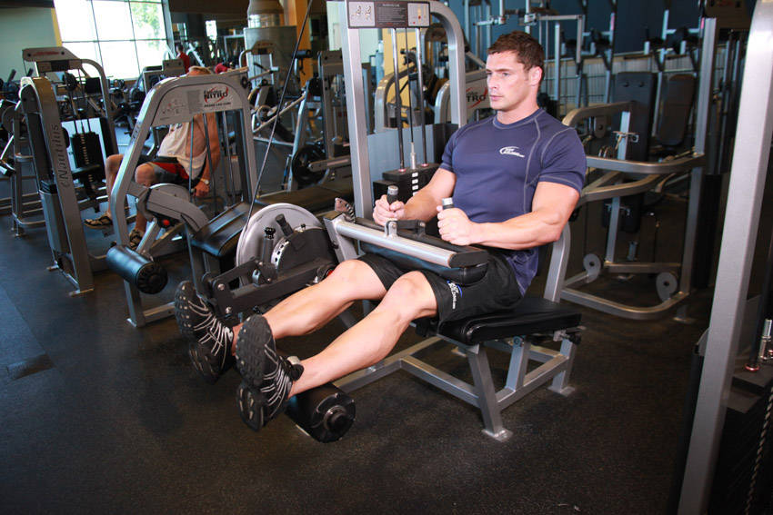
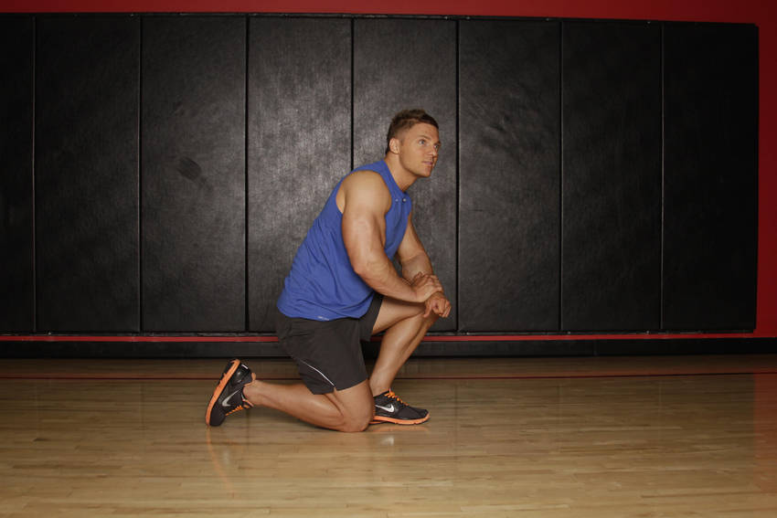
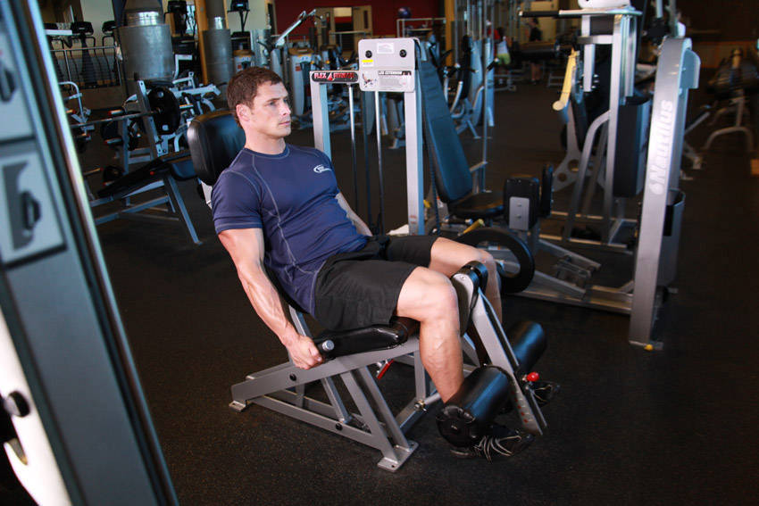
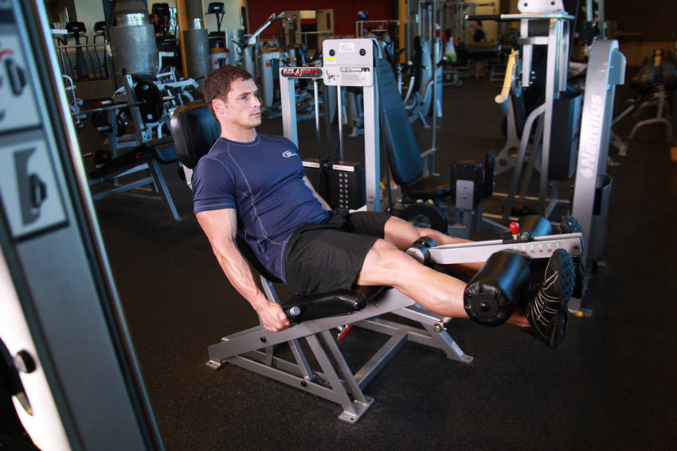
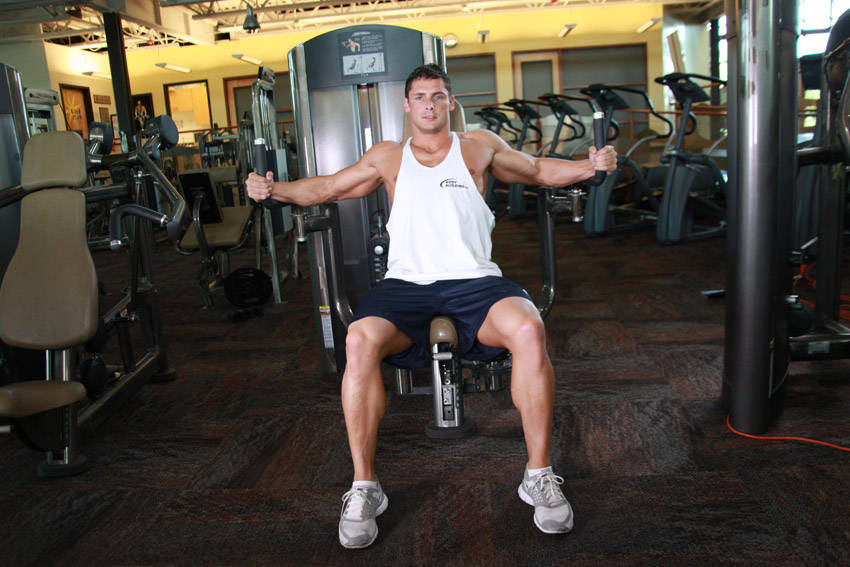
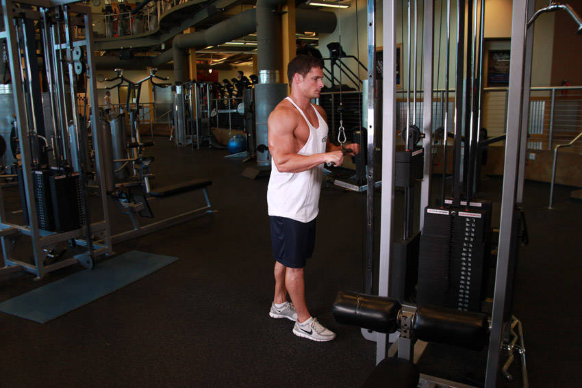
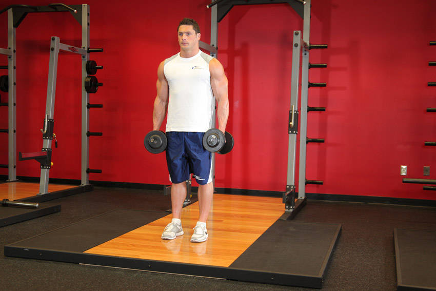

VIKTOR · COACH
Ta machine de reprise
Full body en salle · 2 séances + 1 bonus · décrasse tous les matins
Les règles qui font que ça marche
- RPE 7-8 : les 2 dernières reps piquent, mais restent PROPRES. Zéro échec les premières semaines.
- Repos 60-90s entre les séries.
- Progression : 3×12 propres sur un exo → tu montes la charge la fois d'après.
- Tu notes tes charges et tu me les envoies. On sait quoi battre au prochain coup.
- Fréquence : Jour 1 + Jour 2 espacés (ex. mar / jeu), Bonus le week-end si tu as le jus.
- La charge verte = point de départ estimé (calibré sur ton profil : 94 kg, reprise). Chaque machine a son propre poids de stack, donc le vrai juge c'est le ressenti : 12 reps trop faciles (RPE < 7) → +1 cran. Tu ne finis pas 12 propres → −1 cran. La 1re séance, tu trouves TES chiffres — c'est ça la baseline.
Décrasse matinale
Tous les matins · ~8 min · au réveil · sans matérielObjectif : réveiller le corps, lubrifier les articulations, lancer la machine. Léger, jamais intense. C'est le rituel qui ancre la journée.
1
Respiration réveil5 grandes inspirations profondes, debout, épaules relâchées.
2
Cercles de couRotations lentes de la tête · 30s dans chaque sens.
3
Cercles d'épaules / brasGrands moulinets · 30s avant, 30s arrière.
4
Chat-vache (dos)À quatre pattes, dos rond puis creux · 10 allers-retours lents.
5
Rotations du troncDebout, mains sur les hanches, on tourne le buste · 10 par côté.
6
Fentes marchées5 par jambe, contrôlées, on ouvre la hanche.
7
Squats poids du corps15 reps, amplitude complète, tempo tranquille.
8
Gainage planche30s, corps gainé droit. Puis un grand verre d'eau.
Jour 1 — Full body
~45 min · échauffe 5 min vélo/tapis avant d'attaquer


1Presse à cuisses
3 × 12
⚡ Départ ~60 kg
← glisse pour voir les 3 photos →
RéglageDos bien plaqué au dossier, pieds à plat sur le plateau, largeur de hanches, orteils légèrement ouverts. Siège réglé pour avoir les genoux à ~90° au départ.
ExécutionPousse avec les talons jusqu'à presque tendre les jambes, puis redescends lentement (2-3 sec) jusqu'à ~90° aux genoux. 12 reps.
À éviterNe verrouille jamais les genoux en haut. Ne laisse pas les genoux rentrer vers l'intérieur. Ne décolle pas les fesses du siège.
RespirationInspire en descendant, souffle en poussant.


2Presse à pectoraux (Cybex)
3 × 12
⚡ Départ ~25 kg
← glisse pour voir les 3 photos →
RéglageDos et tête contre le dossier. Règle la hauteur du siège pour que les poignées soient au niveau du milieu de ta poitrine. Pieds à plat au sol.
ExécutionPousse les poignées devant toi jusqu'à presque tendre les bras, puis reviens lentement jusqu'à ce que les coudes dépassent légèrement le buste.
À éviterNe verrouille pas les coudes en fin de poussée. Ne décolle pas les épaules du dossier. Ne laisse pas la charge claquer au retour.
RespirationSouffle en poussant, inspire au retour.


3Tirage assis / rowing (Cybex)
3 × 12
⚡ Départ ~35 kg
← glisse pour voir les 3 photos →
RéglageBuste droit, pieds calés sur les cales, saisis la poignée bras tendus avec un léger étirement du dos au départ.
ExécutionTire la poignée vers le bas-ventre en serrant les omoplates, coudes qui longent le corps. Reviens bras tendus en contrôlant.
À éviterNe tire pas qu'avec les bras (c'est le dos qui travaille). Ne balance pas le buste d'avant en arrière. Ne hausse pas les épaules.
RespirationSouffle en tirant, inspire en relâchant.



4Leg curl (ischios)
3 × 12
⚡ Départ ~25 kg
← glisse pour voir les 3 photos →
RéglageCoussinet posé juste au-dessus des talons (sur le tendon d'Achille), genoux alignés avec l'axe de rotation de la machine.
ExécutionFléchis les genoux en amenant les talons vers les fesses, serre les ischios en fin de course, puis reviens lentement.
À éviterPas d'à-coups ni d'élan. Ne décolle pas le bassin du coussin. Ne laisse pas la charge retomber seule (contrôle le retour).
RespirationSouffle en pliant, inspire en revenant.


5Développé épaules (machine)
3 × 12
⚡ Départ ~20 kg
← glisse pour voir les 3 photos →
RéglageDos plaqué, poignées à hauteur des épaules au départ. Épaule sensible → commence très léger et teste l'amplitude sans douleur avant de charger.
ExécutionPousse au-dessus de la tête sans tendre complètement les coudes, puis redescends jusqu'à hauteur des oreilles.
À éviterNe creuse pas le bas du dos. Ne verrouille pas les coudes. STOP immédiat si DOULEUR d'épaule (une simple tension musculaire, c'est normal ; une douleur articulaire, non).
RespirationSouffle en poussant, inspire en descendant.


6Gainage planche
3 × 40s
⚡ Poids du corps
PositionAppuis sur les avant-bras et les pointes de pieds. Coudes à la verticale sous les épaules.
ExécutionCorps parfaitement droit de la tête aux talons, abdos et fessiers serrés. Tiens 40 secondes, 3 fois.
À éviterNe creuse pas le dos (bassin qui s'affaisse). Ne lève pas les fesses en pont. Ne bloque pas ta respiration.
RespirationRespire calmement et en continu pendant tout le maintien.
Jour 2 — Full body (variation)
~45 min · même logique, autres angles


1Leg extension (quadriceps)
3 × 12
⚡ Départ ~30 kg
← glisse pour voir les 3 photos →
RéglageDos calé contre le dossier, le coussinet repose sur le bas du tibia (juste au-dessus du cou-de-pied). L'axe de rotation doit être aligné avec tes genoux.
ExécutionTends les jambes jusqu'à l'extension complète, tiens 1 seconde en haut en contractant les quadriceps, puis redescends lentement.
À éviterNe claque pas la charge au retour. Ne décolle pas les fesses du siège. Pas d'à-coups pour lancer le mouvement.
RespirationSouffle en tendant, inspire en descendant.



2Pec deck (pectoraux)
3 × 12
⚡ Départ ~25 kg
← glisse pour voir les 3 photos →
RéglageDos plaqué au dossier, avant-bras contre les coussinets, coudes à hauteur des épaules (pas plus haut). Règle le siège pour que ce soit le cas.
ExécutionRamène les coussinets devant toi en serrant les pectoraux au centre, tiens 1 seconde, puis ouvre lentement jusqu'à sentir l'étirement.
À éviterN'ouvre pas trop grand (ça force l'épaule). Ne décolle pas le dos. Ne pousse pas avec les mains, c'est les coudes/avant-bras qui mènent.
RespirationSouffle en fermant, inspire en ouvrant.
3Tirage / rowing (Cybex)
3 × 12
⚡ Départ ~35 kg
← glisse pour voir les 3 photos →
RéglageBuste droit, pieds calés, saisis la poignée bras tendus avec un léger étirement du dos au départ.
ExécutionTire vers le bas-ventre en serrant les omoplates, coudes le long du corps. Reviens bras tendus en contrôlant.
À éviterNe tire pas qu'avec les bras. Ne balance pas le buste. Ne hausse pas les épaules vers les oreilles.
RespirationSouffle en tirant, inspire en relâchant.
4Leg curl (ischios)
3 × 12
⚡ Départ ~25 kg
← glisse pour voir les 3 photos →
RéglageCoussinet juste au-dessus des talons, genoux alignés avec l'axe de la machine.
ExécutionFléchis en amenant les talons vers les fesses, serre les ischios en fin de course, puis reviens lentement. Contrôle le retour, c'est là que ça construit.
À éviterPas d'à-coups. Ne décolle pas le bassin du coussin. Ne laisse pas la charge retomber seule.
RespirationSouffle en pliant, inspire en revenant.



5Triceps (poulie haute)
3 × 12
⚡ Départ ~20 kg
← glisse pour voir les 3 photos →
RéglageDebout face à la poulie haute, saisis la barre/corde, coudes collés au corps, buste légèrement penché en avant.
ExécutionTends les bras vers le bas jusqu'à l'extension complète en gardant les coudes fixes, puis remonte lentement jusqu'à l'angle droit.
À éviterNe décolle pas les coudes du corps. Ne balance pas le buste pour tricher. Ne remonte pas trop haut (garde la tension).
RespirationSouffle en tendant, inspire en remontant.


6Adducteurs + Gainage
3 × 15
⚡ Départ ~35 kg
← glisse pour voir les 3 photos →
RéglageAssis bien calé au fond du siège, jambes écartées contre les coussinets intérieurs des cuisses.
ExécutionSerre les cuisses pour rapprocher les coussinets, tiens 1 seconde au centre, puis ouvre lentement en contrôlant. Finis la séance par 3×40s de planche.
À éviterNe claque pas les coussinets. N'ouvre pas au-delà de ton amplitude confortable. Ne te sers pas des mains pour pousser.
RespirationSouffle en serrant, inspire en ouvrant.
Jour bonus — Cardio + pump léger
Optionnel · le week-end si tu as le jus · ~40 min · tout en légèretéPas obligatoire. Il accélère les résultats (cœur, récup, dépense) et travaille le VO2/l'endurance que J1 et J2 ne touchent pas. Si tu n'as tenu que Jour 1 + Jour 2, c'est déjà gagné. Ici tout est LÉGER : RPE 6, on cherche la circulation et le plaisir, pas la perf.


1Cardio Zone 2
20-30 min
⚡ Allure conversation
RéglageVélo (selle à hauteur de hanche) ou tapis en marche inclinée. Résistance modérée.
ExécutionGarde une allure où tu peux encore tenir une phrase complète sans t'essouffler. Ni sprint, ni promenade. C'est le socle longévité (cœur).
À éviterNe monte pas dans le rouge (si tu ne peux plus parler, ralentis). Ne reste pas avachi sur le guidon.
RespirationRespiration régulière par le nez tant que possible. Si tu dois respirer par la bouche en forçant, c'est trop rapide.
2Presse à cuisses (léger)
2 × 15
⚡ Départ ~40 kg
← glisse pour voir les 3 photos →
RéglageDos et bassin bien calés, pieds écartés largeur d'épaules au milieu du plateau.
ExécutionPlus léger que J1, plus de reps. Descends en pliant à ~90°, pousse sans verrouiller. On cherche le flux sanguin, pas la charge.
À éviterNe décolle pas le bas du dos du siège. Ne verrouille pas les genoux en fin de poussée.
RespirationSouffle en poussant, inspire en descendant.
3Pec deck (léger)
2 × 15
⚡ Départ ~20 kg
← glisse pour voir les 3 photos →
RéglageDos plaqué, avant-bras contre les coussinets, coudes à hauteur des épaules.
ExécutionSerre les pecs au centre, amplitude complète et contrôlée. Léger, aucune douleur d'épaule.
À éviterN'ouvre pas trop grand. Ne force jamais l'épaule sensible.
RespirationSouffle en fermant, inspire en ouvrant.
4Tirage / rowing (léger)
2 × 15
⚡ Départ ~30 kg
← glisse pour voir les 3 photos →
RéglageBuste droit, pieds calés, poignée saisie bras tendus au départ.
ExécutionTire vers le bas-ventre, omoplates serrées, coudes le long du corps. Équilibre le pec deck (muscles du dos).
À éviterNe balance pas le buste. Ne hausse pas les épaules.
RespirationSouffle en tirant, inspire en relâchant.


5Biceps curl (haltères)
2 × 12
⚡ Départ ~8 kg / main
← glisse pour voir les 3 photos →
RéglageDebout, un haltère dans chaque main, bras le long du corps, coudes collés aux côtes.
ExécutionMonte les haltères vers les épaules en gardant les coudes fixes, serre le biceps en haut, descends lentement. Les bras que J1/J2 ne ciblent pas. Pur plaisir.
À éviterPas de balancier du corps. Ne décolle pas les coudes vers l'avant. Ne lâche pas la descente.
RespirationSouffle en montant, inspire en descendant.
6Gainage
3 × 45s
⚡ Poids du corps
PositionAppuis sur les avant-bras et les pointes de pieds, coudes sous les épaules.
ExécutionCorps droit de la tête aux talons, abdos et fessiers serrés. Tiens 45 secondes, 3 fois. Ajoute la planche latérale si tu veux monter d'un cran.
À éviterNe creuse pas le dos. Ne lève pas les fesses. Ne bloque pas ta respiration.
RespirationRespire calmement et en continu pendant tout le maintien.